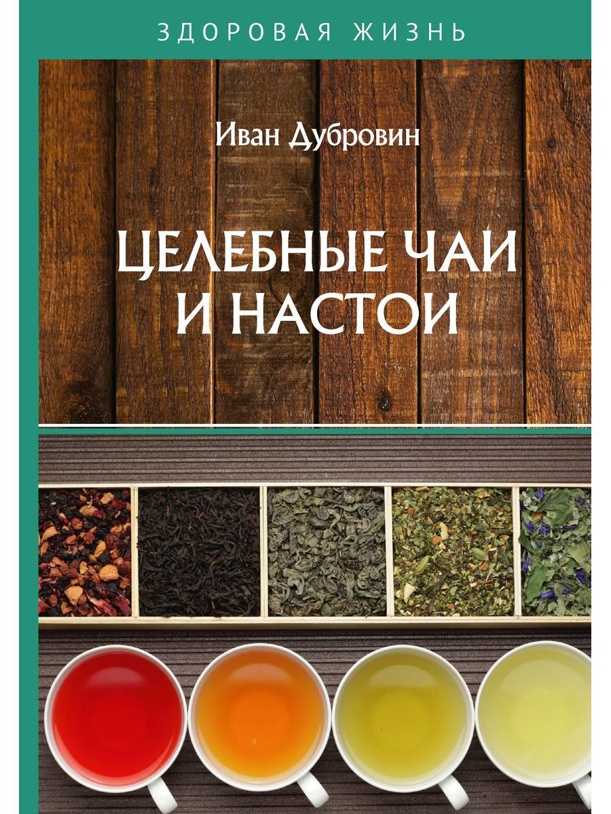

Лечебные чаи и настои.

По материалам книги " Целебные чаи и настои "." Ивана Ильича Дубровина . "
А также из других источников Интернет
Уважаемый Читатель - после ознакомления с Книгой
рекомендую Вам заказать ее бумажное издание.
Данная книга представляет собой уникальный сборник рецептов целебных напитков, для приготовления которых используются травы и растения, зарекомендовавшие себя в народной медицине как эффективные средства лечения и профилактики большинства известных современному обществу заболеваний.
Книга адресована широкому кругу любознательных читателей, уже больных и еще пока здоровых ...